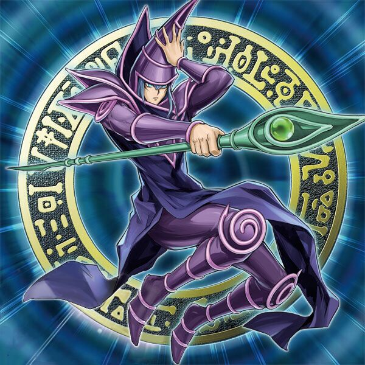
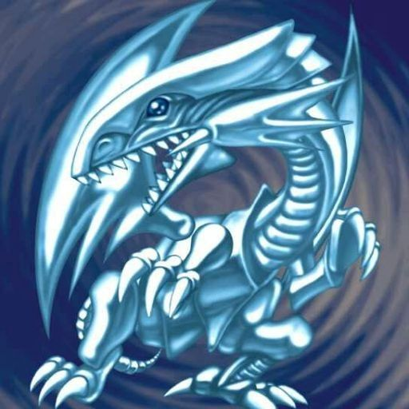
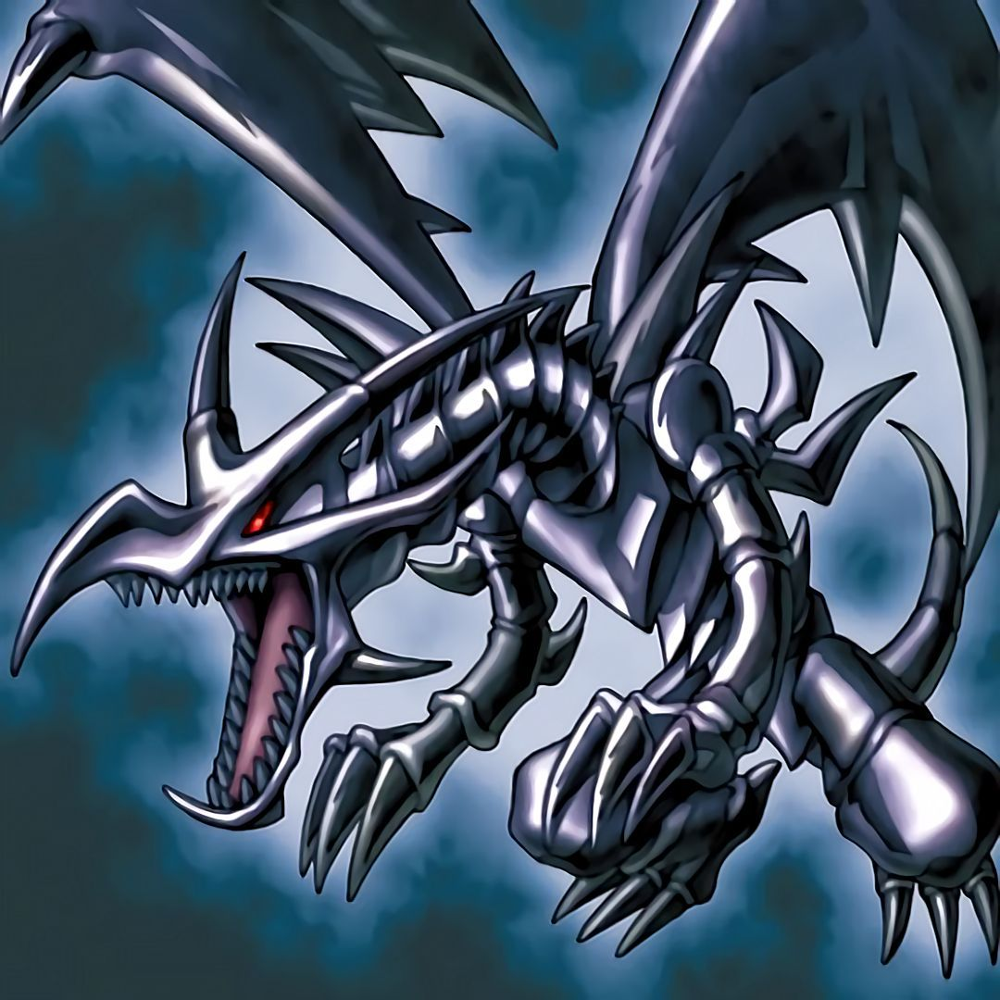
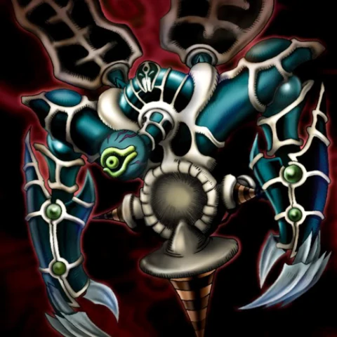
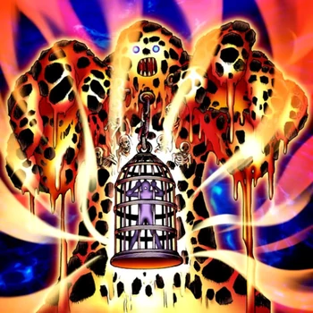
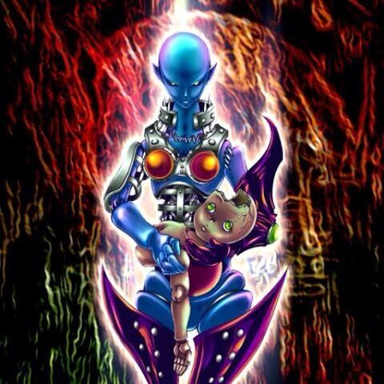

Personagens Principais - Duel Monsters
Yugi Muto
|
Descrição:
Yugi Muto é o protagonista, ganhou o Enigma do Milênio em peças por seu avô, Solomon
Muto. Quando ele resolve o enigma, seu corpo torna-se hospedeiro de um Faraó Egípcio de 5000
anos. Por causa da frequente interação entre os dois personagens, Yugi refere-se ao Faraó
como "Outro Eu".
Yami Yugi. Depois que Yugi e seus amigos descobrem que Yugi é o espírito do Faraó Atemu,
eles começam a referir-se a ele como "Faraó".
|
Monstro Ás: Mago Negro |
Seto Kaiba
|
Descrição:
Seto é dono da sua própria empresa multinacional e acionista desta chamada Corporação Kaiba.
Arrogante, egocêntrico e um tanto egoísta, Kaiba pretende se tornar o melhor duelista do
mundo,
mas para isso ele tem que enfrentar um melhor que ele (YU-GI-OH!) que além de lhe tirar esse
título, para sua humilhação, derota-o frequentemente. Sua principal carta de seu baralho é o
Dragão Branco de Olhos Azuis (3000/2500).
|
Monstro Ás: Dragão Branco de Olhos Azuis |
Joey Wheeler
|
Descrição:
Joey começou como um valentão, mas tornando-se amigo de Yugi Muto isso muda. Embora
ocasionalmente retratado como alívio cômico, ele é essencial para a trama e tema geral da
série. Ele é um duelista entusiasta, que afirma que o duelo é sobre a luta para ajudar as
pessoas que você ama.
|
Monstro Ás: Dragão Negro de Olhos Vermelhos |
Maximillion Pegasus
|
Descrição:
Pegasus é retratado como um homem bem-educado, mas excessivamente dramático,
obcecado por desenhos animados, escondendo a aparência de um empresário e jogador
implacável, mas um homem de palavra.
|
Monstro Ás: Renunciado |
Marik Ishtar
|
Descrição: Marik Ishtar é o líder e fundador dos Caçadores Raros, irmão mais novo de Ishizu Ishtar, o irmão mais novo adotivo de Odion e herdeiro dos Guardiões da Tumba. Marik foi o principal antagonista do arco Battle City, até a derrota de Odion, quando a personalidade dividida de Marik. Yami Marik, assumiu o controle de seu corpo e o substituiu como o principal antagonista. Marik finalmente conseguiu recuperar o controle de seu corpo e destruir seu outro eu de uma vez por todas, redimindo-se no processo. |
Monstro Ás: Lava Golem |
Ryo Bakura
|
Descrição: Bakura é um amigo de Yugi Muto. Ele é o possuidor do Anel do Milênio, uma das sete Relíquias do Milênio. Bakura recebeu o anel de seu pai, que o conseguiu em uma feira egípcia. O Sr. Bakura ouviu que o anel tinha conexões com Duelo de Monstros, um jogo que seu filho adorava. Porém, junto com o anel, havia um espírito maligno, mais tarde conhecido como Yami Bakura (YamiBakura ou Espírito do Anel na versão português). |
Monstro Ás: Dark Necrofear |